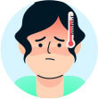

O coronavírus se espalha principalmente por gotículas respiratórias eliminadas quando uma pessoa infectada
tosse, espirra ou fala. Também pode ser transmitido ao tocar superfícies contaminadas e depois levar a mão
aos olhos, nariz ou boca.
Contato Humano
O contato humano facilita a transmissão do coronavírus, especialmente por meio de abraços, apertos
de mão ou proximidade com pessoas infectadas. A prevenção inclui manter o distanciamento social,
higienizar as mãos e evitar aglomerações.
Transmissão Aérea
A transmissão aérea do coronavírus ocorre quando partículas do vírus permanecem suspensas no ar por
um tempo, especialmente em locais fechados e mal ventilados. Essas partículas podem ser inaladas por
outras pessoas, mesmo sem contato direto com o infectado.
Objetos contaminados
Objetos contaminados podem transmitir o coronavírus quando tocados por uma pessoa infectada e, em
seguida, tocados por outra pessoa. Superfícies como maçanetas, celulares e mesas podem ser veículos
do vírus, por isso é importante higienizá-las frequentemente.
Sintomas do coronavírus
Os sintomas do coronavírus incluem febre, tosse seca, cansaço, dor de garganta, dificuldade para respirar e
perda de olfato ou paladar. Em casos graves, pode ocorrer pneumonia e dificuldades respiratórias,
especialmente em pessoas com condições preexistentes ou mais velhas.
Tosse e espirros
Tosse seca e espirros são sintomas comuns do coronavírus, transmitidos por gotículas respiratórias.
É importante cobrir a boca e nariz ao tossir ou espirrar e higienizar as mãos para evitar a
propagação do vírus.

Febre Quente
Febre quente é um sintoma comum do coronavírus, caracterizada por uma elevação da temperatura
corporal acima de 37,8°C. Geralmente, é um sinal de infecção e pode ser acompanhada de calafrios e
mal-estar.
Forte dor de cabeça
A forte dor de cabeça é um sintoma frequente da COVID-19, geralmente intensa e associada a outros
sinais como febre e cansaço.
Falta de ar
A falta de ar é um sintoma grave da COVID-19, indicando dificuldades respiratórias que podem ocorrer
em casos mais avançados da doença.
Confusão
A confusão é um sintoma da COVID-19, geralmente relacionado a casos graves, e pode indicar
comprometimento do sistema respiratório ou nervoso.
Dor de garganta
A dor de garganta é um sintoma comum da COVID-19, geralmente leve, mas pode ser acompanhada de
outros sinais como febre e tosse.
Sobre (2020-nCoV)
Prevenção do Coronavírus
A prevenção do coronavírus inclui o uso de máscaras, higiene frequente das mãos com água e sabão ou álcool
em gel, distanciamento social, evitar aglomerações e manter ambientes bem ventilados. Além disso, é
fundamental a vacinação para reduzir a transmissão e formas graves da doença.
Lave as mãos por 20 segundos
Lavar as mãos por 20 segundos com sabão e água remove germes e vírus, ajudando a prevenir doenças.
Esfregue todas as partes das mãos, incluindo entre os dedos e debaixo das unhas.
Cubra o nariz e a boca ao espirrar
Cubra o nariz e a boca ao espirrar com um lenço ou o braço para evitar espalhar germes e vírus, Lave
as mãos após isso.
Use uma máscara se disponível
Use uma máscara, se disponível, para cobrir a boca e o nariz, ajudando a prevenir a propagação de
germes e vírus, especialmente em locais públicos.
Como lavar as mãos
Para lavar as mãos corretamente, molhe-as com água, aplique sabão e esfregue todas as partes das mãos,
incluindo as palmas, as costas, entre os dedos e debaixo das unhas. Enxágue bem e seque com uma toalha limpa
ou ao ar. Esse processo ajuda a eliminar germes e vírus.
1
Mãos molhadas
2
Aplique sabão
3
Esfregue as mãos palma com palma
4
Ensaboe as costas das duas mãos
5
Esfregue entre os dedos
6
Esfregue as costas dos dedos na palma oposta
7
Polegares limpos
8
Lave as unhas e pontas dos dedos
9
Enxágue as mãos
10
Seque com uma toalha de uso único
11
Use a toalha para fechar a torneira
12
Suas mãos estão limpas
Nosso blog mais popular
Nosso blog mais popular oferece conteúdo valioso sobre saúde, tecnologia e dicas úteis para o dia a dia. Com
artigos informativos e atualizações regulares, ele se tornou uma fonte confiável para os leitores que buscam
melhorar sua qualidade de vida e se manter bem-informados sobre as últimas tendências.
alternative synergy and extensive web services.
Durante o inverno, as baixas temperaturas favorecem a propagação de vírus e o aumento de doenças
respiratórias, como gripes e resfriados. A imagem ilustra uma pessoa doente, reforçando a
importância de manter-se agasalhado, higienizar as mãos com frequência e evitar locais fechados para
prevenir infecções típicas da estação.
A imagem mostra uma pessoa doente segurando uma caneca, representando o alívio buscado com bebidas quentes durante episódios de gripe. Os vírus ao redor indicam infecção, e a expressão de mal-estar reforça a importância de repouso, hidratação e cuidados médicos para uma recuperação adequada.
A imagem mostra uma pessoa visivelmente doente, envolta em um cobertor, sentindo dores no peito e na garganta — sinais clássicos de um resfriado ou gripe. As bochechas rosadas e a expressão de desconforto ressaltam o mal-estar.